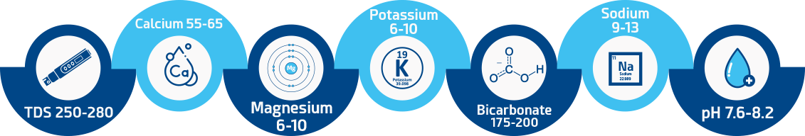

OUR SOURCE
Water the way
Nature intended
Kupper Peak’s natural mineral water is sourced from the deep underground pristine aquifer that delivers natural minerals and trace elements. Our source is naturally enriched with a unique blend of minerals like calcium, magnesium, potassium etc as water undergoes the natural purification process when it passes through the layers of rock, stone & clay before it is collected.
OUR SOURCE
Water the way
Nature intended
Kupper Peak’s natural mineral water is sourced from the deep underground pristine aquifer that delivers natural minerals and trace elements. Our source is naturally enriched with a unique blend of minerals like calcium, magnesium, potassium etc as water undergoes the natural purification process when it passes through the layers of rock, stone & clay before it is collected.
Natural MIneral water Benefits
- Kuppar Peak water is a premium natural Himalayan goodness, it is naturally healthy, fresh & pure.
- The delicious-appealing unique taste created by the gift of nature reflects its original mineral composition, natural alkalinity & high levels of dissolved oxygen.
- Untouched TDS & high pH value makes it naturally alkaline ensuring the purest form of hydration possible.
- No Reverse Osmosis (RO), No UV radiation, Ozonization & Chemical treatment etc.
- Microbiologically pure, free from any contaminants, pollutants, pesticides, radioactive material & artificial flavors or additives.
Typical Mineral Composition
Subject To Natural Seasonal Changes
Food and drug administration (FDA, USA) regulates bottled water as a food and identifies natural mineral waters as “water containing not less than 250 parts per million (ppm) total dissolved solids (TDS), coming from a source at one or more bore holes or springs, originating from a geologically and physically protected underground water source” (Code of Federal Regulations, Title 21, Part 165 - Beverages).
NATURALLY ALKALINE MINERAL WATER
Kupper Peak’s water has one of the best and most balanced PH level from 7.6 to 8.2, it is rich in natural alkalizing minerals which may provide range of health benefits. Natural alkalinity neutralizes the effects of acid in the body, thus helping to reduce the symptoms of digestive disorders, act as an antioxidant etc.
Whether you are looking for a healthier alternative to RO treated tap water or packaged drinking water to balance the PH levels in the body, our natural alkaline mineral water is a perfect choice.
Sparkling Natural Mineral Water
Refreshment in every sip
Introducing Kuppar Peak Sparkling Natural Mineral Water, a pristine drinking experience that delights the palate with its crisp taste and perfect balance of bubbles. Sourced from the majestic Himalayas, our natural mineral water is carefully blended with a gentle fizz, canned at an elevation of 5000 feet to guarantee utmost purity and freshness.
Sparkling Natural Mineral Water
Refreshment in every sip
Introducing Kuppar Peak Sparkling Natural Mineral Water, a pristine drinking experience that delights the palate with its crisp taste and perfect balance of bubbles. Sourced from the majestic Himalayas, our natural mineral water is carefully blended with a gentle fizz, canned at an elevation of 5000 feet to guarantee utmost purity and freshness.